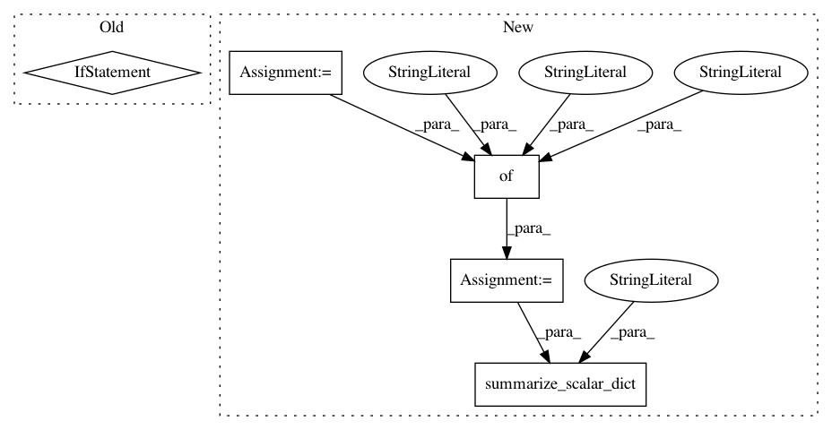

7ec9efd5cf6a479e8c5d85dcc950f464fd15b134,tf_agents/agents/reinforce/reinforce_agent.py,ReinforceAgent,total_loss,#ReinforceAgent#Any#Any#Any#Any#,260
Before Change
name="entropy_regularization_loss",
data=entropy_regularization_loss,
step=self.train_step_counter)
if self._baseline:
tf.compat.v2.summary.scalar(
name="value_estimation_loss",
data=value_estimation_loss,
step=self.train_step_counter)
tf.compat.v2.summary.scalar(
name="total_loss", data=total_loss, step=self.train_step_counter)
return tf_agent.LossInfo(total_loss, ())
After Change
entropy_regularization_loss = self.entropy_regularization_loss(
actions_distribution, weights)
network_regularization_loss = tf.nn.scale_regularization_loss(
self._actor_network.losses)
total_loss = (policy_gradient_loss +
network_regularization_loss +
entropy_regularization_loss)
losses_dict = {
"policy_gradient_loss": policy_gradient_loss,
"policy_network_regularization_loss": network_regularization_loss,
"entropy_regularization_loss": entropy_regularization_loss,
"value_estimation_loss": 0.0,
"value_network_regularization_loss": 0.0,
}
value_estimation_loss = None
if self._baseline:
value_estimation_loss = self.value_estimation_loss(
value_preds, returns, num_episodes, weights)
value_network_regularization_loss = tf.nn.scale_regularization_loss(
self._value_network.losses)
total_loss += value_estimation_loss + value_network_regularization_loss
losses_dict["value_estimation_loss"] = value_estimation_loss
losses_dict["value_network_regularization_loss"] = (
value_network_regularization_loss)
loss_info_extra = ReinforceAgentLossInfo._make(losses_dict)
losses_dict["total_loss"] = total_loss // Total loss not in loss_info_extra.
common.summarize_scalar_dict(losses_dict,
self.train_step_counter,
name_scope="Losses/")
return tf_agent.LossInfo(total_loss, loss_info_extra)
def policy_gradient_loss(self,
In pattern: SUPERPATTERN
Frequency: 3
Non-data size: 5
Instances
Project Name: tensorflow/agents
Commit Name: 7ec9efd5cf6a479e8c5d85dcc950f464fd15b134
Time: 2020-02-28
Author: no-reply@google.com
File Name: tf_agents/agents/reinforce/reinforce_agent.py
Class Name: ReinforceAgent
Method Name: total_loss
Project Name: tensorflow/agents
Commit Name: aa3c6a5f79d82044306f3a11f1de6b7231163d90
Time: 2020-02-24
Author: sguada@google.com
File Name: tf_agents/agents/dqn/dqn_agent.py
Class Name: DqnAgent
Method Name: _loss
Project Name: tensorflow/agents
Commit Name: aa3c6a5f79d82044306f3a11f1de6b7231163d90
Time: 2020-02-24
Author: sguada@google.com
File Name: tf_agents/agents/behavioral_cloning/behavioral_cloning_agent.py
Class Name: BehavioralCloningAgent
Method Name: _loss